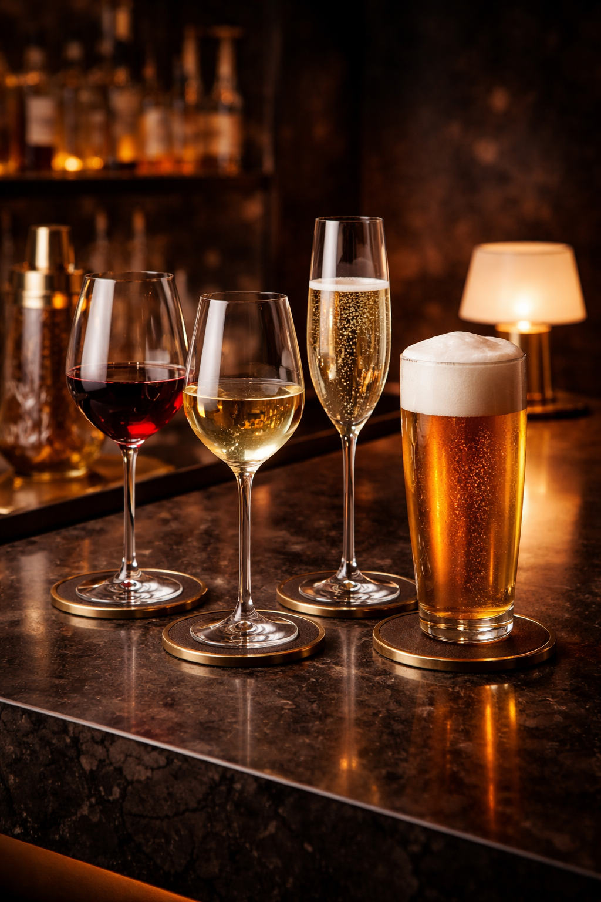

Rotwein
Tiefgang, Struktur, Wärme
Für Schmorgerichte, lange Gespräche und dunkle Saucen mit Nachhall.
Getränkekarte
Die Getränkeseite von Bavarian RoboTaste verbindet klassische Weinlogik, lokale Braukultur, feine Barkunst und eine klare kuratorische Handschrift. Klick auf ein Getränk öffnet die dazugehörige Story.

Sommelier-Auswahl
Rotwein
Für Schmorgerichte, lange Gespräche und dunkle Saucen mit Nachhall.
Weißwein
Für Fisch, Kräuter, leichte Säurebilder und elegante Zwischentöne.
Lokales Bier
Biere mit Herkunft, Charakter und echtem Platz in einem Premium-Haus.
Getränk
CHF 0